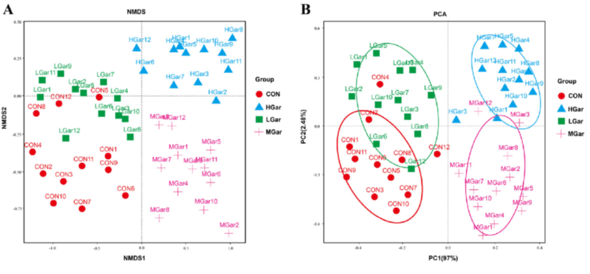
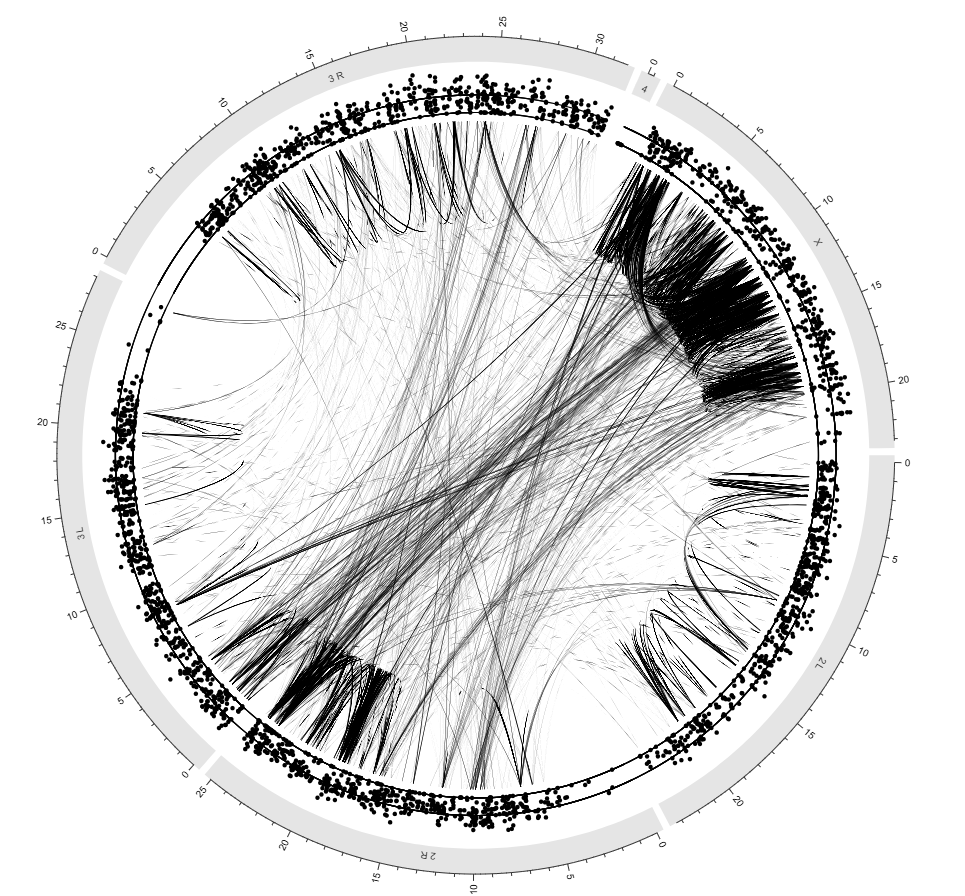
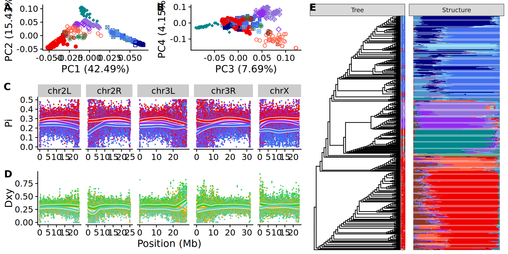

There are many aspects of data visualization that are aesthetic choices - therefore they are largely subjective.
There are some aspects, however, that are not purely subjective, but may mislead/misinform the reader: these you should avoid when possible.
At the end of the day, however, your data is telling a story. Figures, like models, are simplifications of the data. What you plot implicitly assumes what you didn’t plot does not matter.
Be clear about what you are displaying and why, and make replicating your work as easy as possible, and as a result you can take some more liberties in what aspects you decide to plot vs not.
Biggest tip
DON’T STOP AT THE DEFAULT PLOT!
Many packages make it easy to plot their data by including convencience functions.
Use these for data exploration, and getting a general idea for what the data shows. Do not copy these plots directly into your manuscript.
The aesthetic choices are often based on their example data/defaults in R - these might not be right for your data.
Your readers and reviewers will clock a default plot from a mile away, and in a subtle way it will make them doubt your skills.
The defaults just plain look bad!
What is considered bad changes
3-4 decades ago, one major piece of advice on figures was to keep the “data density” high - put as much data into each plot as possible.
We now tend to advise people to decrease visual clutter in graphs by being selective about which aspects of data to plot - not every statistic deserves a main figure.
One reason you will have to spend more time thinking about how to best visualize data in genomics than, say, chemistry, is that most of our data is highly hierarchically structured.
This includes both distance across the genome, but also similarities between populations/species, relationships between different statistics that need to be compared side-by-side, etc.
Starting from the forest
As you begin any project in population genetics, often the first step is to account for population structure.
We’ve shown you before how to plot a PCA, but it’s often useful to plot that PCA including colors based on the inferred clustering/structure.
It’s often to choose a color scheme early and define it at the start of your project - this will let you have one place to change it as you need to update different aspects of the project.
Today’s example data - D. melanogaster
Today, we’ll use some D. melanogaster data.
Three major clusters - southeastern Africa (AFR1), the rest of Africa (AFR2), and cosmopolitan (OOA).
Many small subsets within. Color scheme should ideally let anyone visually identify the major clusters and distinguish within the rest.
Here, I’ll have pre-computed the PCA outside of R.
Often a good idea, since the data-set could be quite huge.
PCA default vs custom
Other good ideas
It can be worth your time to rescale the axes to their relative contributions. In this case, the figure should be ~3x as wide as it is tall, so that visually the PCs match their variance explained ratios.
Example
Color choices for more groups
Double-code!
More PCs?
3D plots - avoid
It may be tempting to tie across dimensions by plotting in 3D. This can work in rare cases.
Generally - some points will be hidden/distances will be less clear in 3D.
Often, 3D plots also show up poorly in print.
Great for presentations/interactive data!
Plot3d Example
PCA alternatives
You will often encounter plots that look like PCA, but are not PCA.
It’s good to know what each is and what they are used for:
PCoA
Principle Coordinate Analysis - calculate distances between all samples across all measured variables and collapse distance matrix to lower dimension. Output axes represent how much distance between samples is explained along that axis.
Example
DAPC
Discriminant analysis of PCs: pre-defined groups are as separated in space as possible. Output axes represent how differentiated different groups are.
Example
NMDS
Non-metric Multidimensional Scaling: Similar to PCoA, but based on rank of distances. Output axes are arbitrary and have no meaning.
Example

t-SNE
t-distributed stochastic neighbor embedding: similar objects are placed near each other probabilistically. Placement varies by run, axes have no meaning, and some methods allow for pre-defined clusters being placed closer to each other.
Optimal when there are many groups, you have equal sampling for each group and you mainly want to display that they do cluster next to each other, but distances between groups don’t matter.
Example
So, which to use?
Depends on your data and what you want to show:
PCA for how variation is partitioned
PCoA for how differences are distributed
NMDS when data doesn’t meet PCA assumptions
t-SNE when data highly multi-dimensional and there are many true clusters, but you don’t need axes to mean anything (and distances between groups are arbitrary)
STRUCTURE - best in context
It’s often tempting to just plot STRUCTURE results.
Keep in mind that this may make the data seem either chaotic (as its ordered relatively arbitrarily), or highly structured when individuals are grouped by similarity.
Often good to plot next to a phylogeny showing relationships between samples.
D. melanogaster structure
Better - along tree
Different layout - harder
Visualizing structure across space
You saw examples of these plots in lab last week, but we can then look at where structure is distributed across space.
Generally a good idea to do this for small numbers of \(K\) - large number of colors can be quite difficult to distinguish.
Let’s look at D. melanogaster data.
D. melanogaster in space
Big takeaways from structure and PCA
Color choice matters - define palettes to make your code usable.
Be careful when \(K\) is large! Hard to choose distinctive color sets.
Embrace hierarchical nature of populations - find similarities between groups.
Looking across the genome
As you visualize statistics across the genome, it’s good to include the relative locations of sites as part of the information.
Raw distributions of, say, \(/pi\) can be useful when comparing between species/populations, but often good to see how they vary across the genome.
Manhattan plots
Manhattan plots are standard approach here: the X-axis is location in genome, with chromosomes strung together front to back, and the Y-axis is whatever statistic you are interested in.
Most packages have their own implementation of this, but good to know how to do manually.
Option 1: Facets
The first option is to use ggplots faceting option to plot each chromosome as a facet, and just plot them in a single row with no space between facets
Biggest benefit is that any loess or similar curves you plot are plotted per chromosome, rather than fitting one curve for whole genome.
Option 1: D. melanogaster
Option 2: Recode positions
Using something like dplyr, you can group the chromosomes together first, and then create a position column that is the bp of each site + total bp up to that point.
Can be more finicky, but produces generally nicer looking plots.
But, plotting anything like geom_smooth() you have to be super careful to not plot across whole genome.
Secret third option
Circos plots arrange the genome in a circle.
Horrible for actual comparisons (inner axes squinched, axes labels unreadable, etc.)
Great for visualizing interactions (LD, epistasis, etc.)
Circos in D. melanogaster

Color choice for genomic plots
Some aspects of the plots are easy to keep consistent with your chosen color scheme (\(\pi\) or demographic history per population can just use the pre-defined scheme).
Pairwise comparisons are more difficult - this is why we’ve saved some primary colors when defining our base scheme.
You won’t have a unique color for everything (in our D. melanogaster data: \(14\) pops, so \(105\) colors for a unique sheme).
Remember that your figures are meant to both display the overall data and tell a story.
Solution 1: choose focal species, color by second
Solution 2: new colors entirely
Minor tip
When plotting a curve over a cloud of points, it’s often hard to see the confidence interval/the curve itself.
Simple fix: remove confidence interval, plot the same curve first as a thick white line.
Example
Alternative - lighter conf int
Some practical details
Often, you will not be satisfied with the end result of your figure fully.
Minor edits, changing layouts, adding details are useful, but be careful about how much you do outside of R/other programming language.
Your workflow needs to be rapidly repeatable!
Complex plots
Functions like plot_grid from cowplot let you create quite complex layouts.
Grammar of graphics (the background philosophy behind ggplot2) deals with images as layers - build up complex figures slowly.
You can take multiple different figures you’ve made and add them in various sizings, with automatic panel labels, etc.
Example

Very Busy!
Lots of twiddling to get to the right point.
Controversial: remove axes labels that will not be readable in real figures.
Adjust text size so the bits that matter are readable.
Submit full versions in the supplement.
E.g.
No figure is really perfect!
Don’t keep twiddling on the figures endlessly!
At some point, the data is displayed clearly, there are few distractions, and so you are good to go.
If this got published so can you
Thursday - Figure critiques
Instead of reading, either bring in your own figure, or find a figure in a paper that you like.
We’ll spend some time thinking about how the relevant data could have been portrayed better, and what aspects of the figure can be changed for the better.
If you have your own data - treat this as an opportunity to get feedback on presentation.
If you don’t - treat this as an opportunity to see how your favorite plots can be improved.
Zeng, Li, Stein B. Jacobsen, Dimitar D. Sasselov, Michail I. Petaev, Andrew Vanderburg, Mercedes Lopez-Morales, Juan Perez-Mercader, et al. 2019. “Growth Model Interpretation of Planet Size Distribution.”Proceedings of the National Academy of Sciences 116 (20): 9723–28. https://doi.org/10.1073/pnas.1812905116.